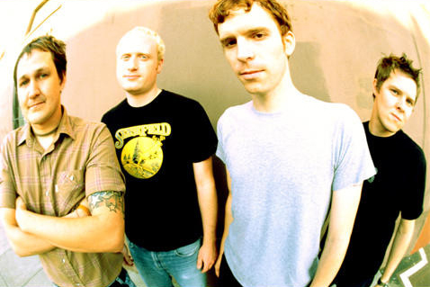

Limited Press Stories
We sit down with the Hey Mercedes frontman to talk about the bands latest reissues from Limited Press.
How do you think the show went?
It was incredible! Probably the most energetic audience we've ever played in front of. Helped us keep our energy levels up, too. It was 100 plus degrees in there. We played for 90 minutes, and we're all creaky old men.
How many reunion shows have Hey Mercedes played so far?
This was the second fully announced one. Before the show we played in 2006, we played a warm-up show in the lobby.

Nanna singing live with Braid in Chicago, July 2018
What made it the right time to reunite now?
The reason we did this one is basically because the Double Door asked us to do it. Damon [Atkinson, drums] has a pretty good relationship through tour managing and doing what he does with the Double Door folks, and with Double Door celebrating their 15-year anniversary this year, they’re having all these special shows and they asked us if we wanted to play one. It just so happened that we all would be in town and available and pretty psyched to get together and play the old songs.
Is it generally harder to get the band back together or find a venue?
Getting us all in one place is a problem, and that was a problem even when we were a real full-time band. I mean, Hey Mercedes have only done two reunion shows, we’re not going on tour, and we’re not starting the band back up again. So it really only takes a week or two and some homework to make sure that we’re tight enough and happy enough with how the set sounds. Both of our reunion shows were done by request. It’s not like, “Hey we need to get back together to play these songs. Let’s see if the Metro can do a show or if the Double Door can do a show.” The last one was a favor I did for Threadless [t-shirt company], basically, and it was a free show at the Metro. It’s not too tough to get together, because it doesn’t take a huge amount of preparation. We’re not learning different sets and the whole catalog or anything.
How was this show be different from the Braid reunion tour in 2004? Was there a lot of pressure in setting up a big reunion tour like that to make sure it was done right?
Oh yeah, definitely. At that point, Hey Mercedes were still a full-time band, so we were still in that mindset. Well, even the last Braid tour was just kind of thrown together. I forgot who was booking us at the time, but it just wasn’t as pro as things were back then. So when Hey Mercedes started and we signed with Vagrant and got Flower Booking, it was a whole different vibe. We were on tours with Jimmy Eat World, and we did the Vagrant America tour, so we realized there was a better way to go about touring. I say “better,” but in reality it was the worst--for cost effectiveness it sucked. We were stupid and kind of wasteful. So when we did the Braid tour, we had all this in mind; we knew about the good parts about having a nice organized tour: knowing when your set time was going to be, knowing if there was going to be food at the venue, or are we going to have to find food after or before, and also stuff like “Well, we could get a bus, or just get a van with a trailer and stay at friends’ houses when we can and hotels when we need to. So it was a combination of both of those things that we tried to do for the Braid tour. As far as it being different from now, it’s that now none of us want to go on tour anymore. But we still like each other, we still like the songs, we still like the fans. So if someone asks us to play a show and it makes sense and we’re all together, we’ll do it. But we don’t have to worry about expenses like gas or food and merch. We’re not going to worry about that.
Do you ever have times when you’re playing in one band and people shout out songs from previous bands?
Not so much anymore. Actually, not at all. When playing solo shows, I would occasionally play Braid or Hey Mercedes songs. It’s weird. Maybe people are getting more respectful of the people on stage. With Certain People I Know shows, no one ever yells Hey Mercedes or Braid songs.
Whenever you get these reunion shows together, is it as much of a joyful reunion for everyone in the band as it is for the fans?
Yeah, definitely. Like I said, it’s tough sometimes getting everyone in one place. Mike [Shumaker, guitar] lives in Cleveland, Damon lives in Chicago but he tour manages Thrice so he’s gone a lot. Todd [Bell, bass] lives in Milwaukee. But we’re all still friends. Even when Hey Mercedes broke up, it wasn’t because we hated each other. It was because we lived in different places and we just didn’t have the time or energy to do it full-time anymore. So getting together with those guys is a big party. We’ll probably practice half the time, and hang out and grill out and talk stories for the rest of the time. It’s not rough at all, getting together with those guys. It’s something we look forward to.
Hey Mercedes in 2007
Do you think Hey Mercedes will play another show in the future?
After these shows, I’d say the chances are better than before but the odds of us being together in the same place greatly diminish once Damon leaves Chicago. So yeah, the interest is there but it's logistically getting more complicated.
What updates do you have with your other projects?
Certain People I Know is on semi-permanent hiatus. As mentioned, Damon is leaving Chicago and all of the other members are busy with other projects. It was never meant to be a full-time thing, and I’m happy we recorded some songs and played some shows. There has been some talk about us recording the remaining songs. I'm all for it, so we'll see how that goes. I've stopped doing Threadless songs, however, there is an entire album of them that I recorded in Seattle [with Chris Common of These Arms Are Snakes] that was never released. Anyone want to release it? I'm still doing solo shows now and then and I hope to start another part time band here with Lauren of CPIK--something eclectic and new. Although every time I say that, it always ends up sounding like the same old junk I’ve been writing for the past 20 years. [Laughs].